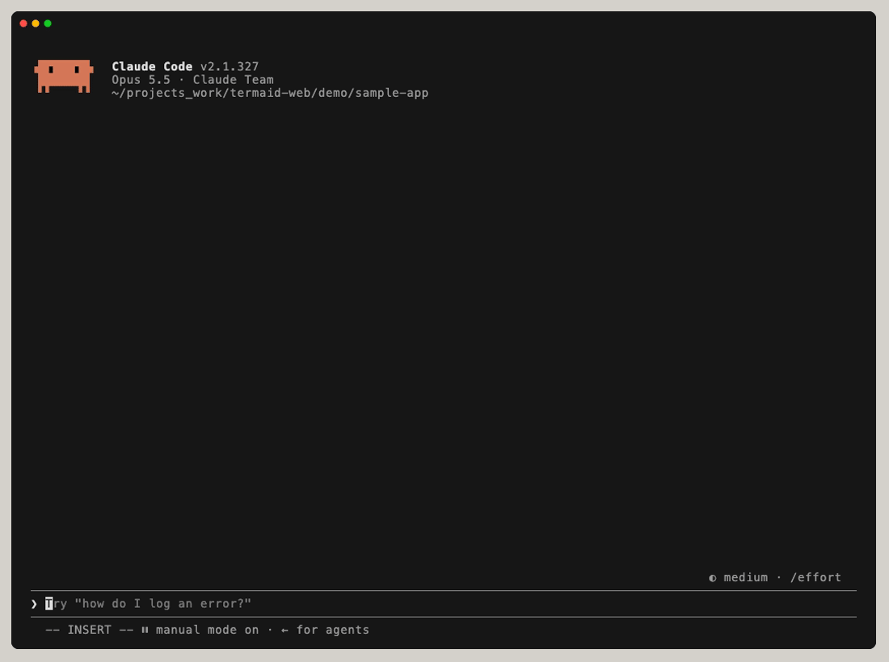
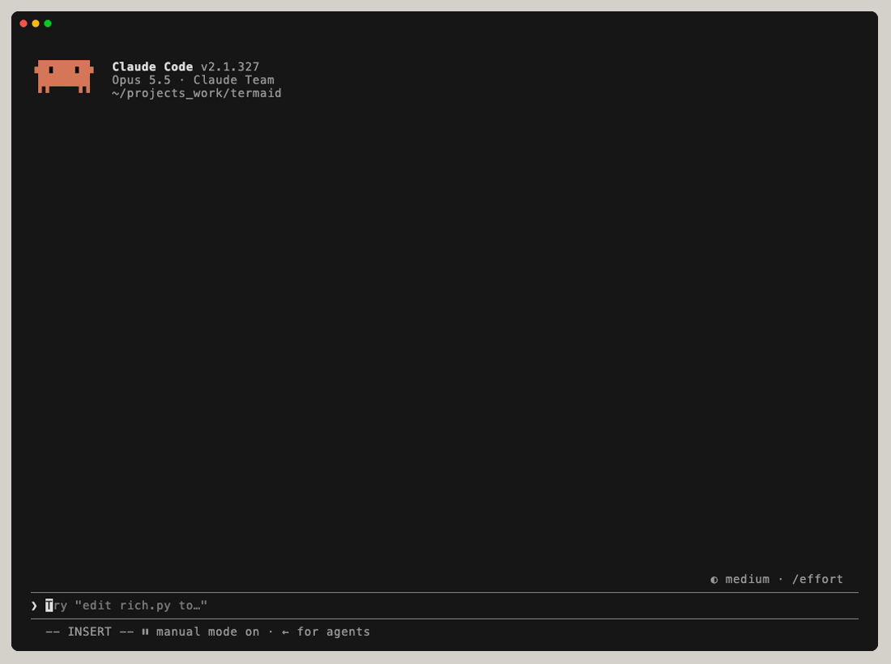
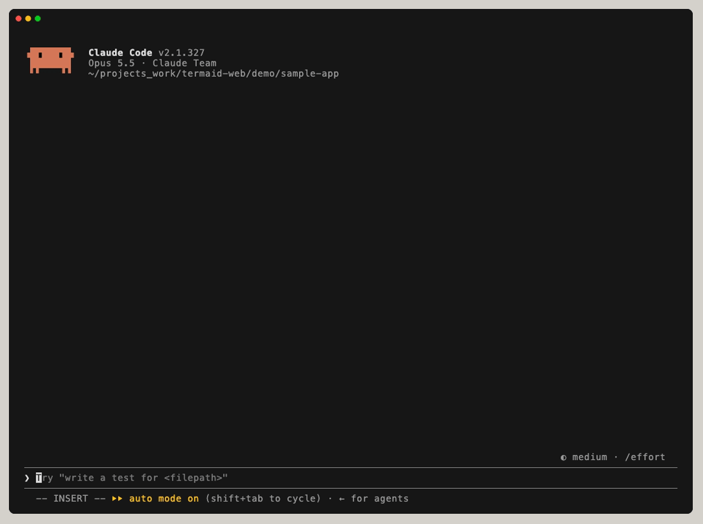
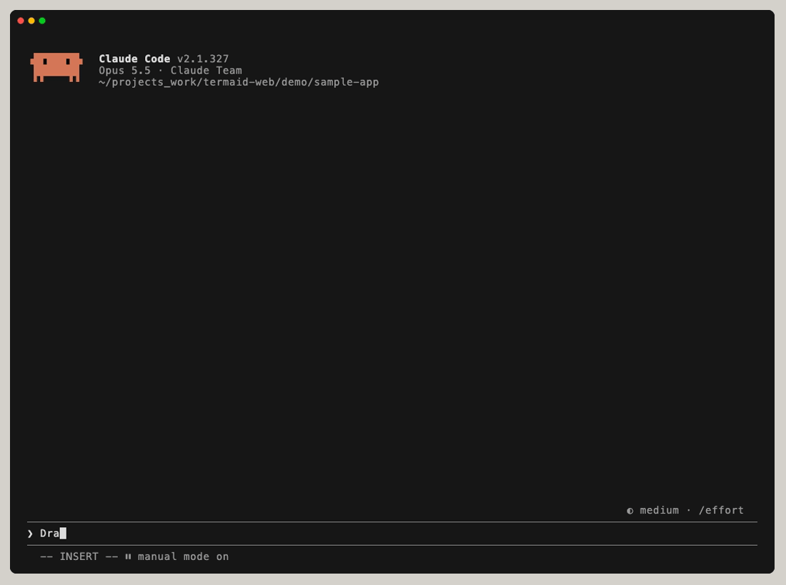
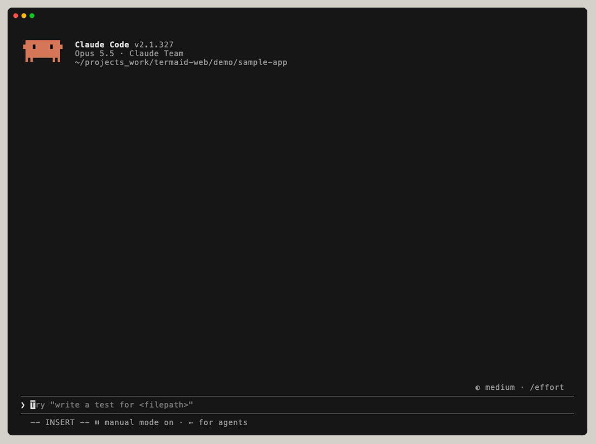
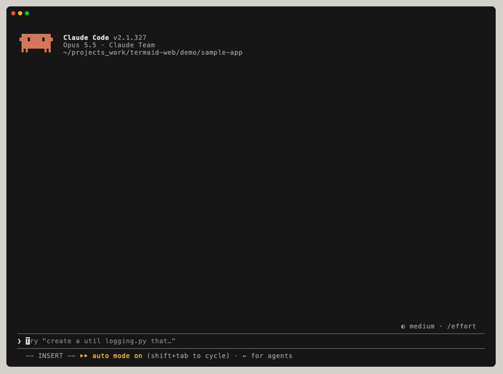

Mermaid diagrams in Claude Code
Claude often answers with Mermaid diagrams. With the termaid plugin, Claude Code draws them in your terminal as Unicode diagrams, while the reply streams.
Install the plugin
-
Install the
termaidcommand. The plugin runs it to draw each diagram.brew install termaid # or uv tool install termaid
-
In Claude Code 2.1.275 or later, install the plugin:
/plugin install termaid --marketplace fasouto/termaid
-
On older versions, add the marketplace first:
/plugin marketplace add fasouto/termaid /plugin install termaid@termaid
The plugin adds a MessageDisplay hook that runs termaid --claude-hook on
each reply, and a /termaid:mermaid skill.
Ask Claude for a diagram
Ask for any Mermaid diagram in plain words. The hook holds back a mermaid code block
until it closes, then draws the diagram where the code was. Text before and after it stays as Claude wrote it.
The hook only changes what you see. The transcript keeps the Mermaid source, so you can ask Claude to change the diagram in the next message and it redraws.

Explain your code with a diagram
Diagrams help most when Claude explains code you haven't read yet. Ask how something works and ask for the answer as a flowchart or sequence diagram.

A database schema as an ER diagram

CREATE TABLE statements.Python classes as a class diagram

Plan work as a gantt chart
Ask Claude to plan a release or a migration as a gantt chart and read the schedule in the terminal.

Draw the diagrams in a file
For diagrams that already exist, such as the ones in a README, a .mmd file or a pull
request description, use the /termaid:mermaid skill.

/termaid:mermaid show the diagrams in README.md draws a flowchart and a state diagram.Without the plugin
The same hook works from .claude/settings.json, for a project that shouldn't depend
on a plugin:
{
"hooks": {
"MessageDisplay": [
{ "hooks": [ { "type": "command", "command": "termaid --claude-hook", "timeout": 10 } ] }
]
}
}
In scripts, pipe the output of claude -p through termaid --markdown,
which draws every mermaid block in a Markdown document:
claude -p "draw the login flow as a mermaid sequence diagram" | termaid --markdown
Questions
What if termaid is missing or a diagram fails to draw?
Claude Code shows the original mermaid code block.
Which diagram types work?
termaid draws 18 Mermaid diagram types: flowcharts, sequence, class, ER, state, block, git graph, gantt, architecture, pie, treemap, mindmap, XY chart, user journey, packet, timeline, kanban and quadrant charts. See them all on the examples page, or try your own in the playground.
Does it work outside Claude Code?
Yes. termaid is a command line tool and a Python library. Run uvx termaid diagram.mmd,
or read the README on GitHub for the Python API,
themes and editor integration.